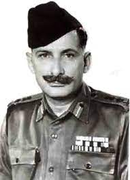
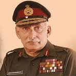
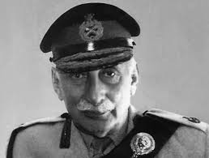
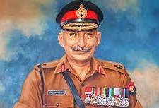
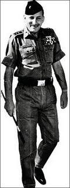

|
* Sam Manekshaw, who was born in Amritsar to Parsi parents,
was the first Indian Army officer to be promoted to the five-star rank of Field Marshal. |
 |
|  |
* Manekshaw was selected as part of the first batch of cadets called "The Pioneers". He proved
to be witty during his stay at Indian Military Academy and went on to achieve a number of firsts:
The first graduate to join one of the Gorkha regiments, first to serve as the
Chief of the Army Staff of India and first to attain the rank of field marshal. |
|
* He was awarded the Military Cross in 1942, the Padma Bhushan in 1968 and the Padma Vibhushan in
1972. |
 |
|  |
Padma Bhushan: In 1968, Manekshaw was awarded the Padma Bhushan, one of India's highest civilian
honors, for his outstanding service to the nation.
|
|
Param Vishisht Seva Medal: In 1972, Manekshaw was awarded the Param Vishisht Seva Medal, India's
highest military decoration, in recognition of his exceptional service and leadership during the
Indo-Pakistan War.
|
 |